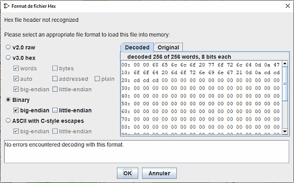
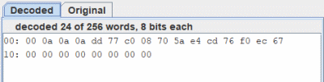
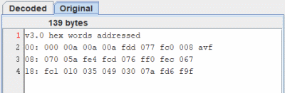
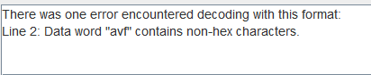

Панель файлов памяти
Это диалоговое окно открывается автоматически, если при загрузке образа памяти Logisim не удаётся однозначно распознать формат данных файла. Окно предоставляет инструменты для ручной настройки параметров конвертации, вкладки для предварительного просмотра оригинальных и декодированных данных, а также панель диагностики ошибок.

Выбор формата и параметров
Группа переключателей позволяет выбрать один из базовых типов структуры файла. При выборе каждого типа динамически активируются соответствующие флажки, позволяющие тонко настроить специфические параметры преобразования.
Подробное описание поддерживаемых форматов можно найти в соответствующих разделах справки:
- v2.0 raw
- v3.0 hex words (plain / addressed)
- v3.0 hex bytes (big-endian / little-endian)
- Binary data (big-endian / little-endian)
- Ascii byte escape (big-endian / little-endian)
Предварительный просмотр данных
Вкладка «Декодировано» (Decoded) позволяет увидеть, как Logisim интерпретирует файл с текущими настройками преобразования.

Вкладка «Оригинал» (Original) отображает исходное содержимое файла в шестнадцатеричном виде для удобного визуального сравнения с результатом декодирования.

Диагностика ошибок
В нижней части окна расположено текстовое поле, в котором в реальном времени выводится отчёт о процессе декодирования и список всех обнаруженных ошибок парсинга.

Далее: Руководство пользователя.